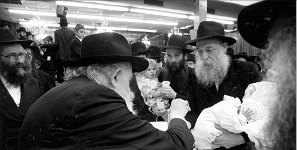
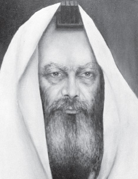
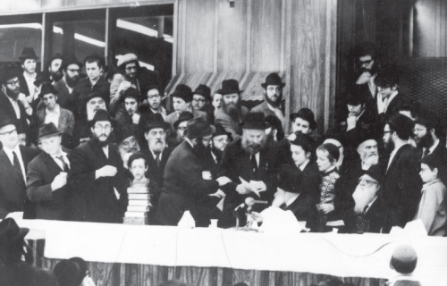

Paintings with Mashke from the Rebbe
For a number of years, the Chassidic artist, R’ Elazar Kalman Tiefenbrun would go to the Rebbe for Shavuos. In yechidus, he merited to hear interesting things about the importance of Jewish art. * On one occasion, the Rebbe even gave him a bottle of mashke and told him to mix the mashke into his pai

WHY DRAW ME LOOKING SERIOUS?
In 5727/1967, my father, R’ Elazar Kalman Tiefenbrun, drew a painting of the Rebbe standing next to his shtender, wrapped in tallis and t’fillin. He planned on doing a printing of the drawing and disseminating copies to the public (in those days, it was quite a novelty to publicize the Rebbe’s photograph in general, even more so a drawing).
My father sent a copy of the drawing to the Rebbe and asked for his consent and blessing, along with questions regarding other personal matters. After some time, he received a “general-particular” letter [letter of the Rebbe sent to many individuals with an identical message – Ed.] at the end of which the Rebbe added a bracha for all the matters he was involved in. Since my father was involved with drawing this picture at the time, he concluded that the Rebbe’s answer was also an approval for his printing the drawing and disseminating it.
A short while later, the askan R’ Avrohom Yitzchok Glick a”h had yechidus, and the Rebbe asked him, “How is Tiefenbrun?’
He answered, “He is in the middle of printing the Rebbe’s picture.”
The Rebbe asked, “Why am I always made to look serious? Perhaps this can be changed.”
When R’ Glick returned to London, he told my father about the yechidus and my father understood that the Rebbe agreed to the publicizing of his picture, but his expression needed to be changed. He sent a letter to the Rebbe in which he wrote that he would try to change it, though he wrote that everybody knows that the Rebbe is a serious man and tallis and t’fillin are also serious matters.
Within a few days my father received an express letter, again a “general-particular” one, with a postscript that said he should change the drawing only if it did not entail a bother or monetary expense since a Jew’s money is very important.

JUDAISM IN A PAINTING
My father had yechidus on Yud-Tes Kislev 5732. The Rebbe told him, “You should have success with the pictures since you have the ability to express Judaism in a painting.”
AGGRAVATION FOR THE RIGHT REASON
In the days close to Shavuos 5732/1972, my father had yechidus along with my sister Rania (Feinland). The Rebbe said, “Your success should be such that it is good for you and good for those who receive the pictures.”
My father told the Rebbe about a certain incident that caused him pain and aggravation because he was a Lubavitcher. The Rebbe said, “That you had aggravation from being a Lubavitcher – if it was decreed that you would have aggravation, this should be the aggravation.”
My father thought it had sounded like he felt aggravation over being a Lubavitcher, and he quickly corrected this impression when he said, “I have agmas nefesh?! It’s a tremendous pleasure!”
The Rebbe smiled broadly and said, “You should know that a good thing always has opposition.”
Then the Rebbe said in English, “This is meant for your daughter too.” And turning to my sister he said, “If you see someone who is not so pleased with Lubavitch, do not be concerned, since in a place where there are more qualities and more holiness, there is more opposition.”
IT IS NOT FORBIDDEN, BUT …
In the days leading up to Shavuos 5735/1975, my father took me for yechidus. My brother Naftali was also with us. The Rebbe tested us and gave us a bracha that we be successful in our learning of Gemara, Mishnayos, Chumash, and Tanach.
My father told the Rebbe that people had suggested that he draw pictures of other people, including the royal family.
The Rebbe said, “I would not want you to waste your energy that you can put into Jewish pictures. According to Shulchan Aruch I do not see why not, as long as it is not immodest. Nevertheless, nowadays, even non-Jews are interested in Jewish subjects.”
At the end of the yechidus, the Rebbe gave my father three dollars for my sister in order to influence three others to light Shabbos candles and another dollar for s’char tircha (i.e. “payment” for the effort she would have to expend).
MAKE OTHERS INTO CHASSIDIM
In 5737/1977, shortly before Shavuos, my father had yechidus along with my brothers Yosef Yitzchok a”h and Naftali. The Rebbe blessed them to grow up to be Chassidim, Yerei Shamayim, and Lamdanim and said, “Make others become Chassidim, Yerei Shamayim, and Lamdanim, to light up the immediate environment. May it be a year of Torah and a year of light.”
Then the Rebbe asked my brother Naftali whether or not he had vacation. He nodded yes and the Rebbe said to him, “You should learn with a friend.”
My brother said, “I arranged with [Moshe] Pekkar that we will learn together.”
The Rebbe asked, “Tzvi Pekkar (Moshe’s father) came today?”
My brother said, “No, his son.”
The Rebbe concluded, “The main thing is that you learn.”
At the end of the yechidus, my father wished the Rebbe, “The Rebbe should be healthy and lead us all towards Moshiach.”
The Rebbe said, “Yes, among Klal Yisroel.”

In Tishrei 5739/1978, I had yechidus with my father and brother Naftali. The Rebbe said, “Shalom aleichem to all of you. May Hashem give everyone a good and sweet year for all those who are here and for those who remained in England. May Hashem accept all prayers.”
The Rebbe said to my father, “You write nothing about the pictures.”
My father apologized and said, “I did not want to lengthen the yechidus.”
The Rebbe asked, “But in actual fact?”
My father said, “I brought four pictures with me.”
The Rebbe said, “You brought four pictures! Were they all bought already?”
My father said, “No, I spoke to people about them.”
The Rebbe said, “If parnasa needs to come through paintings, may it be an ample parnasa, so that you and your wife can raise all the children to Torah, chuppa, and good deeds.”
My father said, “I would like to thank the Rebbe for everything he does for us.”
The Rebbe said, “You don’t need to thank me; you need to thank G-d.”
A BOTTLE OF MASHKE IN THE PAINTS
While distributing Kos shel Bracha on Motzaei Simchas Torah 5739, the Rebbe gave a bottle of mashke to my father and said (in English), “Mix it into your paints.”
Before Pesach, my father asked a rav what to do about Pesach. The rav said he should mix all the mashke into the paint very well until the mashke was not fit for a dog to eat, and then he could put it aside and not have to sell it to a gentile.
After Pesach, my father wrote to the Rebbe that Boruch Hashem, he still had mashke. He did not write that he had mixed the mashke into the paint in such a way that he did not have to sell it to a goy. It was possible to understand from his letter that he had sold the mashke along with the chametz.
The Rebbe expressed his displeasure, and it was clear that the Rebbe did not want his mashke to be sold to a goy. My father wrote again and this time he explained himself, that he made the mashke not fit for a dog to eat which enabled him to leave it on Pesach without selling it to a goy. He said that if the Rebbe wished, he would stop using the mashke and destroy it.
The Rebbe underlined the words “using it” (signifying his approval to continue using it) and regarding what my father wrote, “since it wasn’t chametz, I did not sell it but just set it aside,” the Rebbe wrote, “as self-understood,” (indicating that it should be put to use and not destroyed).
“WHAT ABOUT A BRACHA ACHARONA?”
On the Friday after Shavuos 5741/1981, my father stood in the entrance to 770 and waited for the Rebbe to come. As the Rebbe approached, my father opened the door and held it until the Rebbe went in. The Rebbe suddenly stopped and asked my father, “Do you have what to eat and drink here?”
My father said, “Boruch Hashem.”
The Rebbe said, “Boruch Hashem, but what about a bracha acharona?”
My father had thought of saying a bracha acharona in the place where he had recently eaten, but then he had forgotten to say it. He now remembered that he had forgotten to say it and exclaimed in surprise, “Yes!”
The Rebbe shrugged his shoulders to indicate astonishment as he walked inside, and my father quickly corrected what he had forgotten.
TALENT FROM THE PARENTS
One of the times that my mother had yechidus, the Rebbe said to her, “I hear from various sources that you have a daughter who has the ability to teach both older and younger students, and this [ability] comes from the parents.”
Beis Moshiach. "Paintings with Mashke from the Rebbe." Beis Moshiach, no. 835 (May 22, 2012).